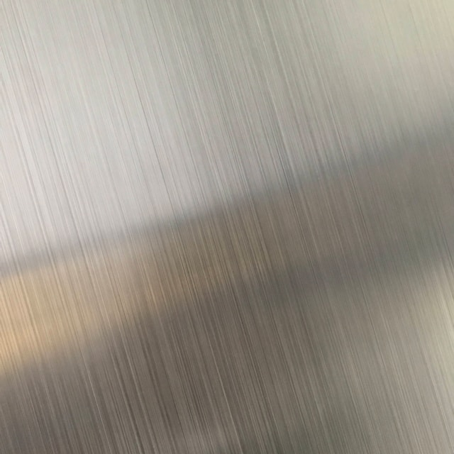
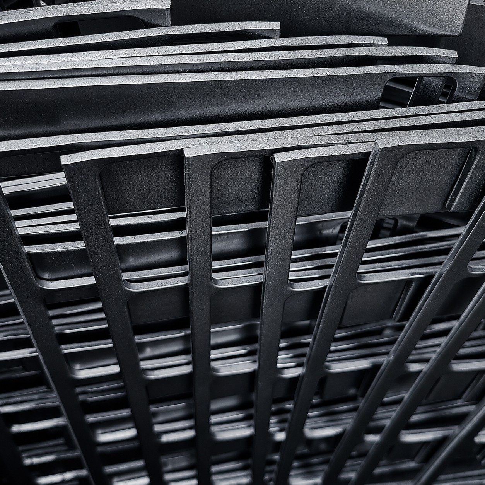
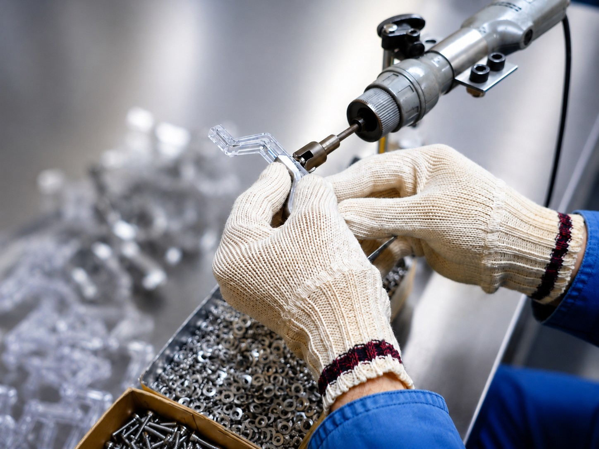
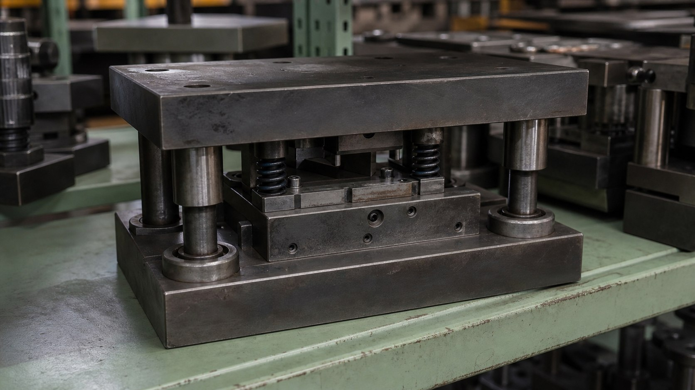

ステンレス加工
耐久性・耐食性が求められる部品や金物を、形状や使用環境に合わせて丁寧に加工します。小ロットや特注品にも柔軟に対応します。
Service
金属部品を、必要な数だけ柔軟に。
What We Do
建築金物や手に持てるサイズの金属部品を中心に、材料手配、プレス加工、スポット溶接、組立、品質検査、梱包、発送まで対応します。数百個程度からの小ロットや、図面がない製品、既存の金型を使った製作も、現物を確認しながら一緒に検討します。

耐久性・耐食性が求められる部品や金物を、形状や使用環境に合わせて丁寧に加工します。小ロットや特注品にも柔軟に対応します。

鉄・アルミをはじめ、用途や仕様に応じた各種金属加工に対応します。素材や形状を踏まえて適切な製作方法を検討します。

大がかりな溶接には対応していませんが、プレス加工後の小部品や金物には、必要に応じてスポット溶接を行えます。接合から組立、品質検査、梱包まで自社で対応します。

委託先の閉業などで金型だけ残っている場合や、製品しか残っていない場合も、確認できるものから製作方法を検討します。
Small Lot / Existing Parts
Flow
用途、素材、数量、納期などを確認します。
仕様に合わせて材料を手配し、加工します。
必要に応じて接合・組立を行い、品質を確認します。
完成品を梱包し、ご指定先へ発送します。
Contact